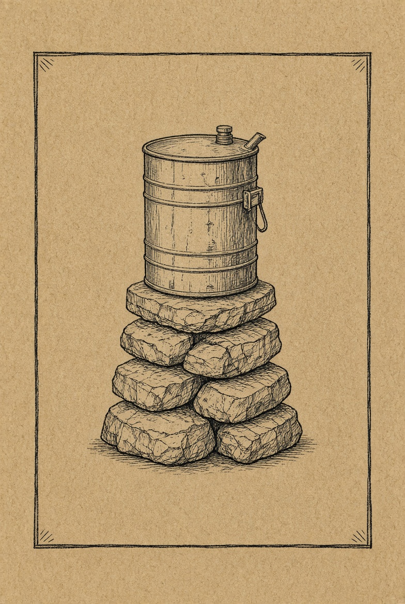

SOUTH FORK · CAMBRIA COUNTY
Roasted at the drum. Kept by the stone.
A camp kitchen in South Fork. Coffee from the roasting drum, chocolate ground fine, jerky and fruit dried down, noodles for the pot. Packed for a trail or a pantry.



THE WRITE-UP
Five things, one fire.
The drum is the roaster. The stones are the base. Everything else is dried so it keeps: bean-to-bar chocolate, beef for the pack, fruit, and alkaline noodles with no egg.
Not for sale until the Pennsylvania kitchen registration is in. Until then, leave a note and we will answer from South Fork.
Leave an order note